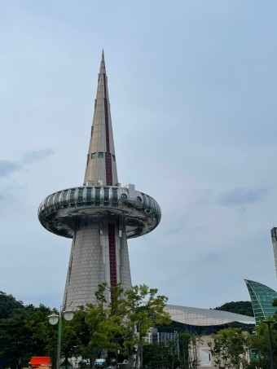
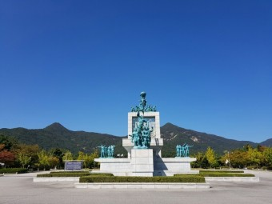
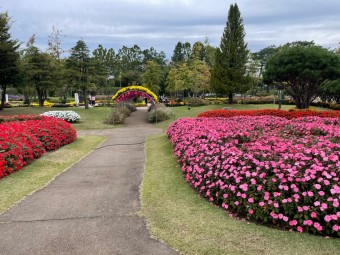

충청도 중남부에 있는 광역자치단체. 순우리말 이름은 '한밭', '큰밭'이고 '한밭'이 대전과 같이 많이 사용되고 있다.
충청권 제1의 도시로 중부지방과 영·호남을 잇는 교통의 요지이자 대덕연구개발특구(대덕연구단지), 국제과학비즈니스벨트가 조성된 한국 최대의 과학·연구도시이다. 또한 4년제 대학만 13곳이 소재한 교육도시이다. 국내에서 서울특별시와 함께 QS 교육하기 좋은 도시 평가 TOP 100에 들어가는 도시이기도 하다
추천!

대전 엑스포
대한민국 대전직할시(現 대전광역시) 유성구 대덕연구개발특구에서 열린 엑스포. 주제는 "새로운 도약으로의 길"이고, 부제는 "전통기술과 현대과학의 조화"와 "자원의 효율적 이용과 재활용"이다. 1993년 8월 7일부터 11월 7일까지 정확히 93일 동안 개최되었다.
서울 올림픽이 열린 지 불과 5년 만에 한국에서 개최된 대규모 국제 행사이다.
추천!

현충원
대전광역시 유성구 현충원로 251(갑동)에 있는 국립현충원이다. 1955년에 개장했던 국립서울현충원의 묘역 포화와 영현 안장 한계 등으로 인하여 1985년에 개장하였다. 관할 기관은 국방부가 아닌 국가보훈처.
넓이는 3.22km²로 모나코보다 넓다.
추천!

유림공원
대전광역시 유성구에 위치한 공원. 갑천과 유성천이 갈라지는 곳에 있다. 공원 중심에는 넓이 2,600제곱미터, 깊이 1.0m 내외의 한반도 모양의 인공 호수인 반도지가 있으며, 이외에도 화훼원, 문학마을도서관, 놀이터, 소동물원 등이 있다. 공원 한켠에는 이 땅을 기증한 정치인 이인구[1] 의 공덕을 기리는 "유림 이인구 선생 공덕비"도 있다.
다른 공원들과 별 다를 바가 없지만 관광을 목적으로 한다면 10월과 4월에 방문하는 것이 좋다. 매년 10월에는 지역에서 유명한 유림공원 국화축제가 열리며, 4월 경에는 화훼원에 튤립을 어마어마하게 심기 때문.